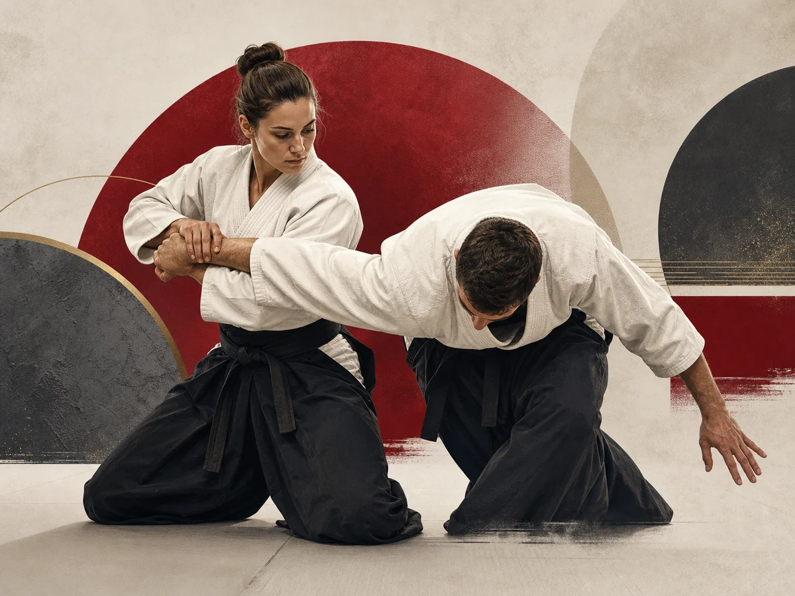

Approche générale
La page officielle rattache le BSD à une défense personnelle simple, rapide et efficace. Elle insiste sur l’adaptation à la réalité du terrain et sur la capacité à réagir sous pression.
Pratique représentée
Le Budo Système Défense est présenté officiellement comme une méthode moderne de self-défense, construite sur l’expérience de terrain, la réalité des agressions et un cadre pédagogique structuré.
Voir la source officielle
La page officielle rattache le BSD à une défense personnelle simple, rapide et efficace. Elle insiste sur l’adaptation à la réalité du terrain et sur la capacité à réagir sous pression.
Les modules cités couvrent les bases de self-défense, la distance, l’évitement, la protection, le cadre juridique, la gestion des conflits, les objets usuels, le Kyusho Ryu et la self-défense urbaine.
La page officielle présente aussi des approches spécifiques comme Ladies BSD, Budo Seniors, BSD Kids et les armes par destination.
Le site mentionne une équipe de référents nationaux autour du développement, des grades et de la formation de la discipline.